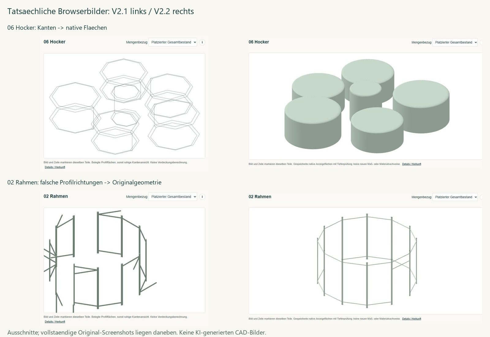

Hocker und Rahmen mit echten CAD-Flächen
V2.1 links, V2.2 rechts. Tatsächliche Browserbilder der lokalen Prüfung; die Geometrie wurde nicht verändert.

- 06 Hocker: sechs native Flächenkörper statt grober achteckiger Kanten.
- 02 Rahmen: 48 Vorkommen in Originalanordnung; falsche Darstellungsrichtungen entfernt.
- S03 nutzt denselben Flächenstil. Tabelle und Bild markieren dieselben Vorkommen.
3DM-Import bleibt lokal. Die öffentliche Website überträgt keine ausgewählte 3DM-Datei. Die native Analyse benötigt den separaten lokalen Windows-Start mit Python. Bereits gespeicherte .cutplan-Projekte können hier geöffnet werden. Geprüfte lokale Importfälle: 139 und 1.686 Vorkommen; Unsicherheiten bleiben ausgewiesen.
85 lokale automatisierte Prüfgruppen bestanden. Keine automatische Produktionsfreigabe. Die öffentliche Veröffentlichung wird zusätzlich auf Darstellung, Solver und Export geprüft.